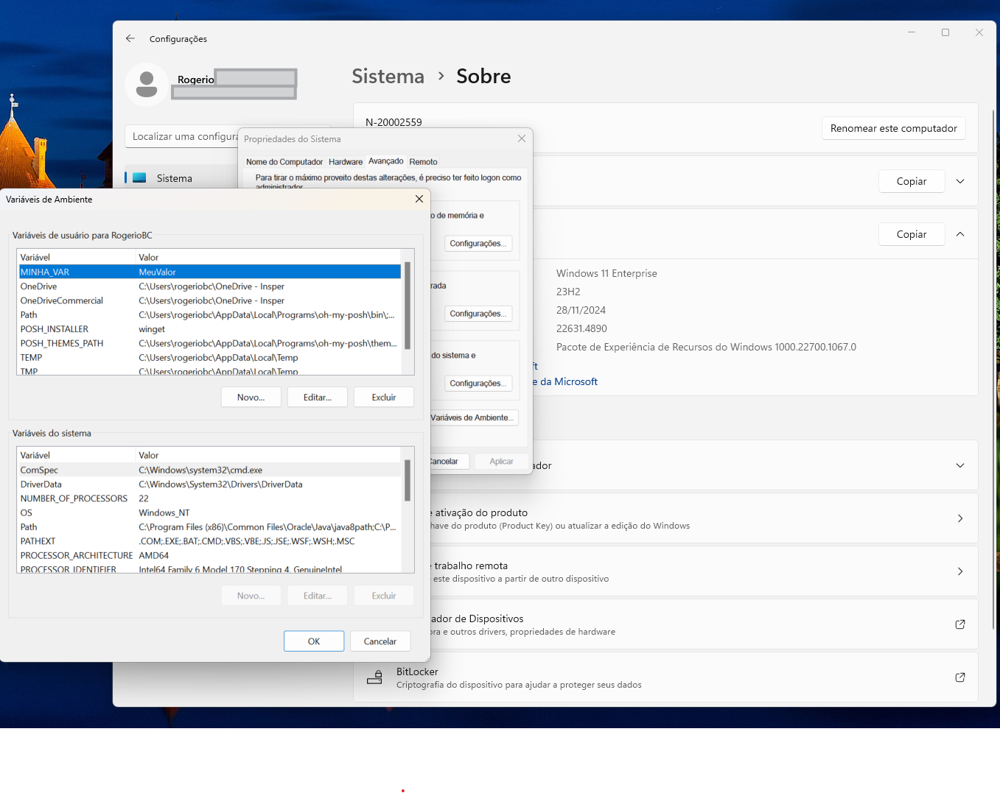
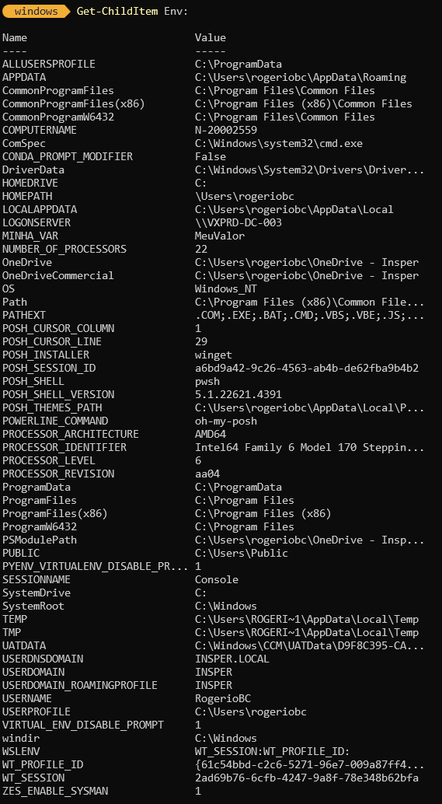

Variáveis em PowerShell
Variáveis de ambiente são valores que afetam o comportamento de processos em um sistema operacional. Elas são usadas por aplicativos e scripts para configurar comportamentos específicos, como caminhos de sistema, configurações de aplicativos ou informações sensíveis.
Tipos de Variáveis de Ambiente
- Variáveis de Sistema: Afetam todos os usuários do sistema e são definidas no nível do sistema operacional.
- Variáveis de Usuário: São específicas para cada usuário e são definidas no perfil do usuário.
- Variáveis de Processo: São criadas por um processo e são destruídas quando o processo termina.
Como Visualizar e Modificar Variáveis de Ambiente
Via GUI
Painel de Controle:
Vá para "Sistema" ou "Sistema e Segurança" > "Sistema" > "Configurações avançadas do sistema" > "Variáveis de Ambiente". 
{kind=link}
Editar Variáveis:
Para variáveis de sistema, clique em "Novo" ou "Editar" na seção "Variáveis do sistema".
Para variáveis de usuário, faça o mesmo na seção "Variáveis do usuário".
PowerShell
Visualizar Variáveis:

Modificar Variáveis:
{kind=link}
Para variáveis persistentes, use:
Uso Prático de Variáveis de Ambiente
Variáveis de ambiente são frequentemente usadas para:
Caminhos de sistema: Definir locais de instalação de aplicativos ou bibliotecas.
Configurações de aplicativos: Armazenar informações de configuração que não devem ser hard-coded.
Segurança: Armazenar informações sensíveis, como chaves de API, de forma segura.
Elas são essenciais para manter configurações consistentes entre diferentes sessões e aplicativos no Windows.
Exemplo
Para exemplificar o uso de variáveis, vamos fazer um pequeno script com o famoso "Hello World".
Você terá duas opções a partir deste momento, ou você clona o repositório desta atividade:
Ou você cria um diretório para iniciar o primeiro script:
Em ambos os casos vocë terá uma pasta chamada windows dentro do seu usuário. (caso tenha escolhido outra pasta, basta trocar o nome) Então vamos "entrar" ou "subir" para esta pasta e criar o nosso script.
Em seguida vamos digitar o seguinte texto dentro do arquivo:
# Exemplo de script para fazer o Hello World em PowerShell.
# Para este exemplo, vamos criar uma variável de ambiente chamada SAUDACAO e atribuir o valor "Ola Mundo!" a ela.
# Em seguida, vamos exibir o valor da variável de ambiente SAUDACAO.
$Env:SAUDACAO = "Ola Mundo!"
Write-Host $Env:SAUDACAO
{kind=link}
Neste momento você criou seu primeiro script para PowerShell utilizando variáveis de ambiente. No primeiro comando você criou a variável de ambiente SAUDACAO e colocou o conteúdo Ola Mundo!. No segundo comando você utilizou o comando Write-Hostpara escrever o conteúdo da variável de ambiente SAUDACAO.